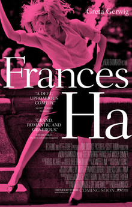

Noah Baumbach
2012
86 minutes
This film is for a girl who lost her script
Wandering through a world devoid of color
Mumbling lines into an offscreen mic
Still matching wits with all the pretty boys
As if she were a Shakespeare heroine
Declared a clever girl and patted on the head
A tame velociraptor kept for show
Not knowing which way she should prance offstage
She sprints through New York like Denis Lavant
On squandered money and on borrowed time
Bowie soundtrack blasting in her head
A reckoning awaits her but for now
She's free to seek her soul
And scratch part of her name
Onto a tiny mailbox
Hoping to be found
Time to choose something different: